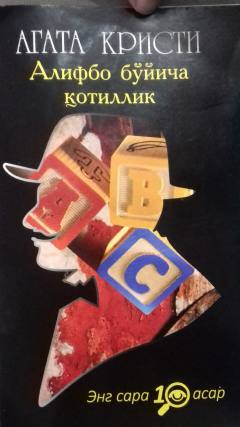

ABErkyul Puaro alifbo tartibida sodir etilayotgan sirli qotilliklarni fosh etishga kirishadi.
Izquvar Erkyul Puaro va kapitan Gastings alifbo tartibida sodir etilayotgan sirli qotilliklar zanjiriga duch kelishadi. Anonim maktublar orqali chaqiriq tashlayotgan jinoyatchini to'xtatish uchun Puaro o'zining noyob mantiqiy qobiliyatini ishga soladi. Ushbu asar Agata Kristining eng mashhur detektiv romanlaridan biridir.